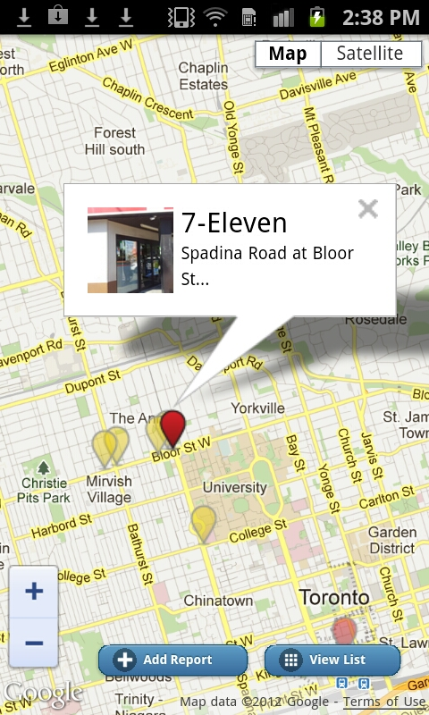

The next time you walk down an urban street, look around.
Chances are you’ll see surveillance cameras pointed at public spaces.
- Can you tell who is operating those cameras?
- Why are they there?
- Do you know what is happening to your image?
- Are these surveillance networks compliant with Canadian privacy laws?
About the Projects
About SurveillanceRights
SurveillanceRights is a research project that aims to better inform Canadians about video surveillance and their rights in relation to it. We are developing this website and the SurveillanceWatch web and smartphone app for mapping the location of surveillance cameras using crowdsourced contributions from people like you.
To access a beta version of the SurveillanceWatch camera mapping site, please click here.
About 'Who's Watching You?'
What do you think about video surveillance? This project asks how Canadians feel about being filmed when walking down public sidewalks, going into shopping centres or office buildings, or walking past many other publicly accessible areas. You can spot cameras operated by stores, bars, restaurants, property managers, banks, hotels, police services, hospitals, schools, universities, and more. What kind of information would you like to know about the way these places collect, use, or store images of you?
Are your privacy rights respected?
Because video surveillance operators capture personal information, they come under Canadian privacy legislation. For example, video surveillance in commercial operations is governed by the Personal Information Protection and Electronic Documents Act (PIPEDA) or provincial equivalent.
You have the right to an informed choice
Canadian Privacy Commissioners have noted that ‘most privacy laws require the organization conducting video surveillance to post a clear and understandable notice about the use of cameras on its premises to individuals whose images might be captured by them, before these individuals enter the premises.’ This is so we can make an informed choice about whether or not to enter.
You have the right to know who is watching you and why
Signs should at a minimum clearly tell you:
- who is operating the camera
- who you can contact if you have questions
- the purpose(s) of the surveillance
A study conducted in 2010-2011 by researchers at the University of Toronto’s Faculty of Information found that most privately operated video surveillance networks in the Greater Toronto Area (approximately 70%) did not display any signs at all, even though they are required to do so. Of the signs that did exist, not a single sign was found that met all basic requirements under PIPEDA.
What can you do about it?
We have yet to find a single private sector video surveillance installation that is compliant with Canadian law. We offer a $100 reward to the first person to bring a minimally compliant private sector installation to our attention.
A minimally compliant surveillance installation is accompanied by a sign which:
- Is visible and readable to people before they enter surveilled space
- Includes basic information about:
- Who owns/operates it
- The purpose(s) of the surveillance
- Whether images are being monitored live, or recorded, or both
- Contact details for a timely response from the responsible privacy official (e.g. a title and a phone number)
- Relevant legal jurisdiction
See our Minimal Privacy Compliance Standard for Canadian video surveillance installations for more information about compliance.
For more information about video surveillance installations, see our video surveillance mapping site currently under development. Please help others who are concerned about privacy rights by adding information about video surveillance you’ve spotted. We welcome your comments and suggestions.
Affiliated Projects
The New Transparency: Surveillance and Social Sorting
Digitally Mediated Surveillance